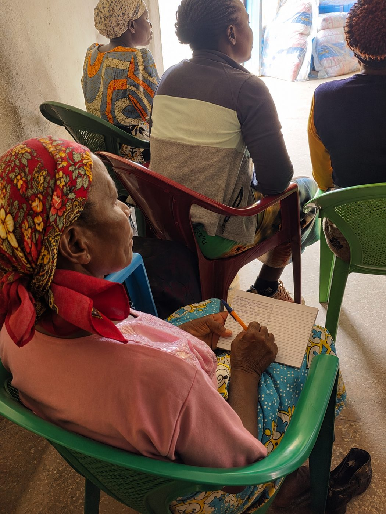

Learning, pen in hand
At our training sessions, women farmers come ready to learn and write it all down. Agronomists and extension officers walk them through climate-smart methods like Zai pits, ripping and biochar, and social education sessions help each group plan its season together.
What they write in these notebooks goes home with them, to the plots they are bringing back to life.
How we train and restore